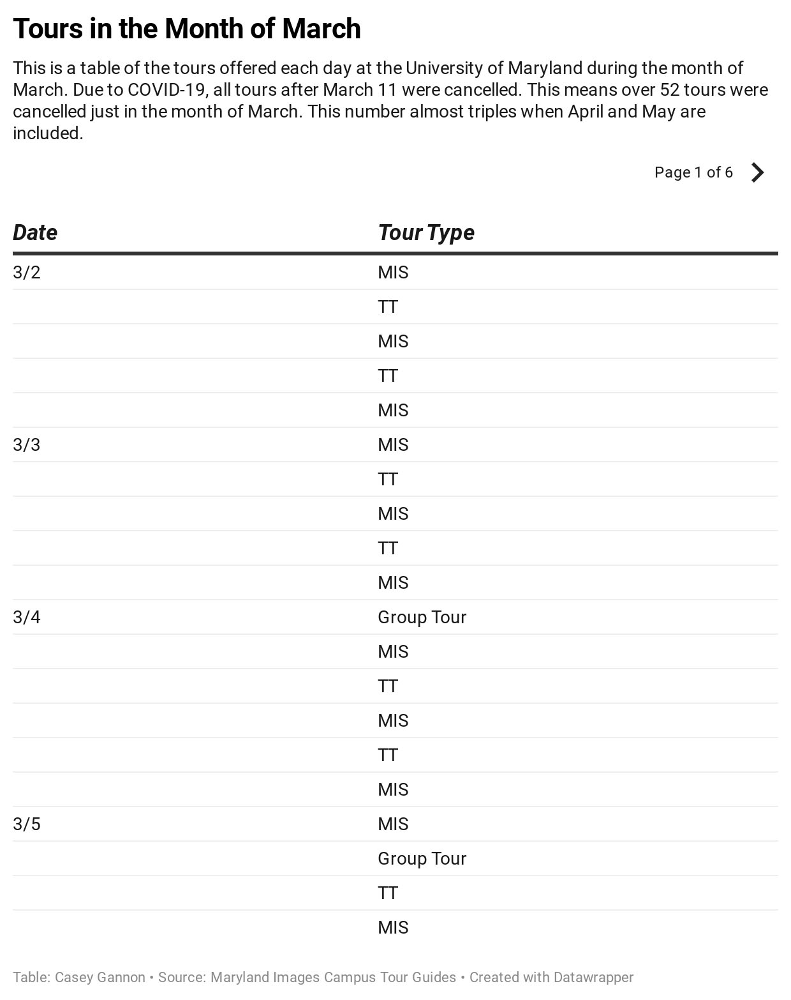

Due to the recent COVID-19 pandemic, universities around the country have cancelled admitted students days and campus tours. These programs and tours allow universities one last chance to sell their campus to prospective students.
According to The New York Times, schools like the University of Washington are offering information sessions via Zoom for prospective students and their families. Paul Seegert, the director of undergraduate admissions, said they are hoping to have campus tour guides speak with prospective students on Zoom.
Some universities have decided to extend their deadline to accept admission, which is typically May 1. Andy Borst, the director of undergraduate admissions at the University of Illinois at Urbana-Champaign, said many universities are debating extending their deadline to accept to June 1.
In the city of College Park, Md,
Mt. Lebanon High School senior, Carter Gannon, is in the midst of making his college decision. His top two choices at the moment are Case Western Reserve University in Cleveland, Ohio, and Virginia Tech, in Blacksburg, Va.
“They are extremely different primarily due to their student populations and locations. I thought one last tour at Virginia Tech would cause me to lean more toward one or the other,” Gannon said.
Gannon said it will be more difficult to make a decision now that he cannot visit campuses in person. He will be taking advantage of virtual tours in order to make his decision as soon as possible.
“Trying to decide what school I want to attend is a big decision, and that is probably why I want to continue to push my decision back,” Gannon said. “ However, my parents really wanted me to decide by the end of March.”
High school seniors are not the only people upset about tours and admitted student day cancellations. Campus tour guides around the country are disappointed because they are not able to participate in a hobby or have lost an income.
Maryland Images is the official campus tour guide organization at the University of Maryland. The tour guides at the university are not paid, but many of them look forward to the spring when they have the opportunity to share their love of UMD with admitted students. UMD gives 90 minutes tours in order to highlight the important parts of campus.
Tour guides are expected to hit a minimum of six tours for the Spring 2020 semester, according to Group Tours Coordinator Michael Keffler. A typical semester for a tour guide consists of 10 tours, two recruitment activities and two social activities. Over 52 tours were canceled in just the month of March due to the COVID-19 pandemic.
Sophomore journalism and criminology and criminal justice studies double major Emily Riley is a tour guide for Maryland Images.
As a tour guide, Riley does not believe virtual tours are the best solution for prospective students.
“I think virtual tours certainly should be an option, but I don’t necessarily think it’s an adequate alternative just because there’s nothing like being there in person,” Riley said. “I think a good alternative would be the option for prospective seniors to be able to get matched with a current student and be able to talk or text about any questions and concerns they may have so they can still get their burning questions answered by a real student.”

While Riley was upset to leave campus and have tours cancelled, she sympathized more for prospective students who may be struggling to make a decision and senior campus tour guides who never got to give their last tour.
“I mean honestly I was sad. Of course I was sad for myself, but mostly I was so sad for all the [high school] seniors who wanted to come visit UMD to make their decision. There’s nothing better than going to visit a campus in person, and I feel like that experience has been taken away from current seniors,” Riley said. “I also felt awful for college seniors who were tour guides who never got to prepare for what would be their last tour.”
Sophomore journalism major Molly Cuddy is a tour guide at UMD. She only gave four tours this semester before being forced to leave campus.
“When we went online I obviously knew there wasn’t going to be any more tours, so I was upset just because I feel like I didn’t get to give as many as I wanted to,” Cuddy said. “I enjoy doing it and I feel like I didn’t get to get the full experience of being a rookie and giving my first semester of tours.”
Having tours cancelled for over half a semester did not allow Cuddy to meet her tour requirement. She will not be penalized, but she was looking forward to showing prospective students why she loves UMD. She said due to COVID-19, she will have a different mindset when giving tours in the future.
“I’m definitely going to get a different perspective when I start giving tours again next semester because I’ll think about all the people who weren’t able to take tours that wanted to,” Cuddy said. “Now I understand more than ever than people rely so much on college tours and I’ll keep that in mind.”